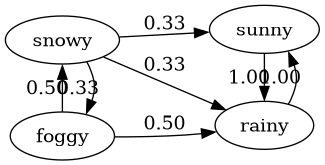
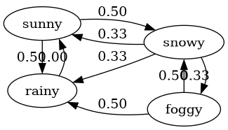

PS 06 -- Markov Processes
Suppose you’re standing on a street with buildings labelled by the integers (specifically, you’re in front of the building labelled \(0\), and suppose that the indices are increasing to the right). Suppose that every minute you flip a coin. If the coin is heads you walk right and if the coin is tails you walk left.
Explain why your position (i.e. the building you’re in front of) as a function of time can be modeled as a Markov process.
Your position at time t is (randomly chosen to be) one step to the left or to the right of your previous position, and hence is only dependent on your position at time t − 1. It doesn’t matter (for instance) what sequence of steps took you to get to your position at time t − 1, and hence this is a Markov chain.
Somewhat more precisely, the nodes of the transition diagram are in one-to-one correspondence with the integers \(\{0, \pm 1, \pm 2, \cdots\}\), and each node
[n]has two outgoing edges. There is an edge[n] --> [n+1]labeled with probability 1/2, and an edge[n-1] <-- [n]also labeled with probability 1/2. Thus, the probabilities on the outgoing edges always sum to 1.And the state of the system evolves each minute by applying the rules of this state machine; this is the definition of a Markov process (or Markov chain).
Can the distance from where you started as a function of time be modeled by a Markov process?
Yes. In this case, consider the transition diagram whose nodes are non-negative integers. For any node
[n]withn>0, there are two outgoing edges:[n] --> [n+1]and[n-1] <-- [n], both of which are labeled with probability 1/2.If you are standing in front of building
m- so that the distance from building0is|m|- , the effect of aheadstoss and of atailstoss depend on the sign ofm. Namely, ifm>0and you tossheads, you move one building to the right and hence increase your distance to the origin by one unit, and if you tosstails, you move one building to the left and hence decrease your distance to the origin by one unit.On the other hand, if
m<0and you tossheads, your one-building to the right move increases your distance to the origin by one unit, and if you tosstails, your distance to the origin decreases by one unit.Finally, if your distance is
0, there is only one outgoing edge[0] --> [1]and it has a probability of 1, since a toss of eitherheadsortailsresults in a move placing you exactly 1 unit from the origin.In summary,
distance to the originis governed by the transition diagram we just described, hence is a Markov process.Now suppose that every minute you flip two coins. If both are heads, you move right, if both are tails you move left and otherwise you stay put. Is your distance from where you started modeled by a Markov process in this scenario? How do you expect this to compare to the process described in part b?
This is again a Markov process, with a different transition diagram which we now describe.
Again the nodes of the diagram are non-negative integers
[n].The outgoing edges from
For[0]are a loop[0] --> [0]together with an edge[0] --> [1]. In this case each edge occurs with probability 1/2. (A result ofheads,headortails,tailscauses a move[0] --> [1], while a mixed toss results in the move[0] --> [0].|n| > 0, there are 3 outgoing edges from[n]:[n] --> [n]is labeled with probability 1/2 and results fromheads,tailsortails,heads[n] --> [n+1]is labeled with probability 1/4; ifn>0this move results fromheads,headwhile ifn<0this move results fromtails,tails.[n] --> [n-1]is also labeled with probability 1/4; ifn>0this move results fromtails,tailswhile ifn<0this move results fromheads,heads.
For both experiments, compute the probability that you are standing on an odd number for minute \(0,1,2,3,4\).
I’ll do this calculation with the following code:
from pprint import pprint # we represent the probabilities for a certain state # of our system using a dictionary # The initial state is { 0:1 } - this means with probability 1 you are at distance 0 # The state { 0: p0, 1: p1, 2: p2, ... } indicates that with probability pi you are ate distance i. # def prob(state,pos): # return the probability recorded in the state dictionary for the indicated position if pos in state.keys(): return state[pos] else: return 0 def step(f,state): # update the state using the transition function f # f should be a function of two arguments: f(old_pos,new_pos) # should return the probability of transitioning from old_pos to new_pos # We use f to update the probabilities, and we return the new state results = len(state.keys()) return { r: f(r-1,r)*prob(state,r-1) + f(r,r)*prob(state,r) + f(r+1,r)*prob(state,r+1) for r in range(results+1) } def iterate(num,f,init): # given a starting state `init`, return the state after `num` iterations, # using the function `f` as input to `step`. if num<=0: return init else: return iterate(num-1,f,step(f,init)) def prob_odd(state): # for a given state, return the probability that the distance from # building 0 is *odd* return sum([ state[r] for r in state.keys() if r % 2 == 1 ])In the case described in (b), using only one coin, we define a function computing the probabilities for state transitions in the single-coin case. We find the following:
# we'll use this function as the update function f when # calling the `step` function defined above. # def one_coin(old_pos,new_pos): # return the probability of # transition from old_pos to new_pos match (old_pos,new_pos): case 0,1: return 1 case 0,_: return 0 case m,n: if abs(m-n) == 1: return .5 else: return 0 S = [ (m,iterate(m,one_coin,{0:1})) for m in [0,1,2,3,4] ] T = [ (m,prob_odd(state)) for (m,state) in S ] pprint(S) print(T) => [(0, {0: 1}), (1, {0: 0.0, 1: 1.0}), (2, {0: 0.5, 1: 0.0, 2: 0.5}), (3, {0: 0.0, 1: 0.75, 2: 0.0, 3: 0.25}), (4, {0: 0.375, 1: 0.0, 2: 0.5, 3: 0.0, 4: 0.125})] [(0, 0), (1, 1.0), (2, 0.0), (3, 1.0), (4, 0.0)]Here we see that after 0,2,4 steps we are never in front of an odd-numbered building, and after 1,3 steps we are always in front of an odd-numbered building.
In the case described in (c), we find instead the following results:
# we'll use this function as the update function f when # calling the `step` function defined above. # def two_coin(old_pos,new_pos): # return the probability of # transition from old_pos to new_pos match (old_pos,new_pos): case 0,1: return .5 case 0,0: return .5 case m,n: if m==n: return .5 if abs(m-n) == 1: return .25 else: return 0 S = [ (m,iterate(m,two_coin,{0:1})) for m in [0,1,2,3,4] ] T = [ (m,prob_odd(state)) for (m,state) in S ] pprint(S) print(T) => [(0, {0: 1}), (1, {0: 0.5, 1: 0.5}), (2, {0: 0.375, 1: 0.5, 2: 0.125}), (3, {0: 0.3125, 1: 0.46875, 2: 0.1875, 3: 0.03125}), (4, {0: 0.2734375, 1: 0.4375, 2: 0.21875, 3: 0.0625, 4: 0.0078125})] [(0, 0), (1, 0.5), (2, 0.5), (3, 0.5), (4, 0.5)]So after 0 steps, we are (of course) never in front of an odd numbered building, but after 1,2,3 or 4 steps we are in front of an odd numbered building with probability 1/2.
(Optional food for thought) Suppose your friend is playing the same game, but started at position −100. Do you think it is more likely that you two will eventually meet or that you two will never meet? Does this answer change when your friend starts at −1? How about −10000000?
It is a fact that two random walkers will eventually meet regardless of where they start.
Rain or shine On Planet X, the weather is strangely predictable: The weather is always either sunny, rainy, foggy or snowy. If it rains today, its sunny tomorrow. If it is sunny today, its rainy tomorrow. If its foggy today, its not sunny tomorrow. Finally, the weather is never the same two days in a row. Apart from these rules, the weather is completely random, in that if e.g. its foggy today it is equally likely to be either rainy or snowy tomorrow. You live on Planet X and are trying to figure out what to wear this week, so you’d like to develop a model for the weather.
Explain why the weather can be modeled as a Markov process. Write out the transition matrix, and draw the corresponding finite state machine.
The system is governed by a transition diagram for which the probabilities on the outgoing edges from each node sum to 1. Thus, the system is a Markov process.
We describe the transition diagram. It has 4 nodes:
sunny,rainy,foggyandsnowy. We are going to draw the diagram usinggraphvizso we describe the probabilities as a python dictionary:weather = [ 'sunny', 'rainy', 'foggy', 'snowy' ] transitions = { ('rainy', 'sunny'): 1, ('sunny', 'rainy'): 1, **{ ('foggy',w): 1/2 for w in weather if w != 'sunny' and w != 'foggy' }, **{ ('snowy',w): 1/3 for w in weather if w != 'snowy' } } transitions => {('rainy', 'sunny'): 1, ('sunny', 'rainy'): 1, ('foggy', 'rainy'): 0.5, ('foggy', 'snowy'): 0.5, ('snowy', 'sunny'): 0.3333333333333333, ('snowy', 'rainy'): 0.3333333333333333, ('snowy', 'foggy'): 0.3333333333333333}Now we create the labeled digram:
from graphviz import Digraph dot = Digraph() dot.attr(rankdir='LR') with dot.subgraph() as c: c.attr(rank='same') c.node('rainy') c.node('sunny') with dot.subgraph() as c: c.attr(rank='same') c.node('foggy') c.node('snowy') from itertools import product for (v1,v2) in product(weather,weather): if (v1,v2) in transitions.keys(): dot.edge(v1,v2,f"{transitions[(v1,v2)]:.02f}") dot.render('weather.png')
And we create the transition matrix:
import numpy as np import numpy.linalg as npl def transition_prob(v,w): # get the probability for the transition v-->w if (v,w) in transitions.keys(): return transitions[(v,w)] else: return 0 p = np.array([[ transition_prob(v,w) for v in weather] for w in weather ]) p => array([[0. , 1. , 0. , 0.33333333], [1. , 0. , 0.5 , 0.33333333], [0. , 0. , 0. , 0.33333333], [0. , 0. , 0.5 , 0. ]])Check whether the conditions for the Perron-Frobenius theorem is satisfied for this problem (aperiodic and strongly connected). Explain your reasoning.
The hypothesis of the Frobenius-Perron theorem do not hold. The transition diagram is not strongly connected. For example, there is no path from the node
sunnyto the nodefoggy.Do you expect power iteration to be effective for computing the greatest eigenvector of your transition matrix?
Because the conclusion of the Frobenius-Perron theorem is not known to hold, it is possible that
phas more than one eigenvalue with absolute value 1. In that case, power iteration will not help to compute the greatest eigenvector.Find the eigenvalue decomposition for the transition matrix, and the associated eigenvectors. Explain why these values confirm your answer to part 2.
(the problem should have read: “Explain why these values confirm your answer to (c)”).
Let’s look at the eigenvalues of
p:vals,vecs = npl.eig(p) vals => array([ 1. , 0.40824829, -1. , -0.40824829])We note that
phas an eigenvalue 1, but also an eigenvalue -1.If
vis an eigenvector with eigenvalue -1, thennpl.matrix_power(p,n) @ v = ± vdepending on the parity of
n.So the long-term behavior of powers of
pfails to stabilize, so we do not expect power iteration to be an effective way of computing the greatest eigenvector.Suppose that the “weather rules” change so that if its sunny today, it is equally likely to be snowy or rainy tomorrow. Write out the new transition matrix, associated finite state machine, and determine whether the conditions for the Perron-Frobenius are satisfied. Compute the eigenvalue decomposition and compare to the previous set of eigenvalues.
We update the transition probabilities to reflect the new weather rules:
new_transitions = { ('rainy', 'sunny'): 1, ('sunny', 'rainy'): 1/2, ('sunny', 'snowy'): 1/2, **{ ('foggy',w): 1/2 for w in weather if w != 'sunny' and w != 'foggy' }, **{ ('snowy',w): 1/3 for w in weather if w != 'snowy' } }We get a new diagram as follows:
new_dot = Digraph(format='png') dot.attr(rankdir='LR') with dot.subgraph() as c: c.attr(rank='same') c.node('rainy') c.node('sunny') with dot.subgraph() as c: c.attr(rank='same') c.node('foggy') c.node('snowy') for (v1,v2) in product(weather,weather): if (v1,v2) in new_transitions.keys(): dot.edge(v1,v2,f"{new_transitions[(v1,v2)]:.02f}") dot.render('new_weather')
And we get a new transition matrix
q.q = np.array([[ transition_prob(v,w,new_transitions) for v in weather] for w in weather ]) q => array([[0. , 1. , 0. , 0.33333333], [0.5 , 0. , 0.5 , 0.33333333], [0. , 0. , 0. , 0.33333333], [0.5 , 0. , 0.5 , 0. ]])We observe that in this case, the transition diagram is strong connected. Moreover, it is also acyclic e.g. because there are cycles of length two (
snowy --> foggy --> snowyfor example) as well as cycles of length three (sunny --> snowy --> rainy --> sunny). Sincegcd(2,3) = 1there only natural number dividing all cycle lengths is 1.Thus the Frobenius Perron Theorem holds. It promises that
qhas eigenvalue 1 with multiplicity 1. Ifvis an eigenvector with eigenvalue 1, normalized so thatvis a probability vector, then we know thatnpl.matrix_power(p,n)converges as \(n \to \infty\) to the matrix
Bwith 4 columns equal to the vectorv.We can observe this phenomenon by compute “big” powers of
q:npl.matrix_power(q,100) => array([[0.38461538, 0.38461538, 0.38461538, 0.38461538], [0.30769231, 0.30769231, 0.30769231, 0.30769231], [0.07692308, 0.07692308, 0.07692308, 0.07692308], [0.23076923, 0.23076923, 0.23076923, 0.23076923]])We check the eigenvalues:
vals,vecs = npl.eig(q) vals => array([ 1. , -0.78867513, -0.21132487, 0. ])In this case, as promised by Frobenius-Perron, there is exactly one eigenvalue with absolute value 1. All other eigenvalues \(\lambda\) have \(|\lambda| < 1\).
Note that after normalizing, the eigenvector
vecs[:,0]is close to the columns of the matrix \(q^{100}\) we computed above:# get the eigenvector computed by numpy for eigenvalue 1 # remember that it is the first *column* of the matrix ev, # not the first row...!! ev = vecs[:,0] # normalize to make a probability vector c = np.array([1,1,1,1]) @ ev # c is the sum of the entries of ev p_ev = (1/c)*ev # the entries of p_ev sum to 1 p_ev => array([0.38461538, 0.30769231, 0.07692308, 0.23076923])